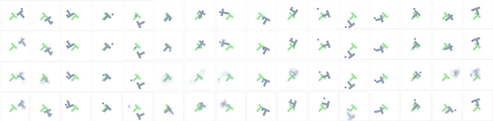

Does a world-model planner do better when it picks waypoints first and fills in the actions after? We built one, and we took apart a published one.
Task
Push-T
Built on
stable-worldmodel
Date
October 2026
The idea
Imagine first, then act. Hierarchy imagines in bigger steps.
A world model predicts what an action will do. The planner, CEM, samples action sequences, imagines each one, keeps the best tenth and repeats. Every extra step of lookahead makes that search bigger and lets the model's errors compound.
Push-T: push a T-shaped block onto its target. The pusher can only push, never grasp.
One question, two parts
We built a hierarchical planner, and we stress-tested a published one.
Part 1 · Build
Our coarse-to-fine planner
Model
a small recurrent world model, ours, at two speeds
Goal
25 steps away
Runs
3 seeds × 50 episodes
Part 2 · Diagnose
Hi-LeWM, from “Mind the Gap”
Model
the authors' released checkpoints
Goal
50 steps away, the paper's setting
Runs
50 episodes, seed 42, the paper's budget
The goals sit at different distances, so the two parts' success rates are never compared with each other.
Caselli et al., “Mind the Gap: Promises and Pitfalls of Hierarchical Planning in LeWorldModel”, arXiv 2607.12547
Part 1 · Before our own model
First we checked the test bench gives trustworthy numbers.
87.3%
LeWM, measured by us
Published as 96%. Every team that reran it independently landed between 82% and 90%. We ruled out six mechanical explanations, then accepted 87.3 ± 7.6 over 3 seeds.
0.6 pts
Three machines agree
Same seeds on an RTX 3060 under Windows, a V100 on the cluster and an A4000 under Ubuntu: 87.3, 86.7 and 87.3%. No seed moved by more than one episode.
84.0%
DINO-WM, measured by us
The other reference model, from a community checkpoint, after fixing three faults to load it. Inside the 84–92% other teams report on rerun.
Our first planning horizon came from the design. It cost us 47 points.
Why 40 fails
The goal is 25 steps away, and a plan is scored only on its last imagined step. At 40 the planner aims to be in the right place 15 steps after the goal.
Three seeds
Horizon 40: 15.3%. Horizon 10: 62.0%, pooled over two runs. Fixing how often it replans later took it to 69.3%.
Bigger steps win most when compute is scarce. Refining adds nothing.
Same compute
The coarse model beats flat CEM by +12.0 points at 15,000 evaluations per plan (p = 0.0003) and +9.6 at 7,500. Flat CEM stalls near 67% even at four times the compute.
Refinement
Ours and the coarse model alone differ by at most 2.4 points at every budget, never significantly.
Control (Experiment C) passed first: with the stride set to 1, ours scores 70.0% against flat CEM's 69.3%.
notes/results/expA_sweep_results.md · 5 seeds × 50 episodes per point · paired McNemar · RTX A4000 · expC_results.md
Part 2 · Reproducing Hi-LeWM
The paper's planner reproduces. Its two fixes do not.
hilewm/results/runs.csv · summarize_eval_runs/ · Wilson 95% intervals · d = 50, 50 episodes, the paper's Table 5 CEM budget
Part 2 · Splitting the gap
The model's own subgoals cost 22 points.
Wrong, not unreachable
How much of the distance to the goal a failed episode still covered:
Expert's subgoals0.76
Model's subgoals0.12
Failures under the expert's subgoals are near misses. Under the model's own, the block barely moved toward the goal.
hilewm/results/compare_eval_runs/ · paired McNemar tests on the same 50 episodes · analyse_acting_npz/
Part 2 · Why the subgoals are wrong
The planner finds plans the model overrates, and its waypoints blur.
×9.5
how much better the model scores the plans CEM picks than the expert's own actions. Better than real means it is exploiting the model's errors.
5–7 of 32
dimensions the real macro-actions occupy. The search wanders into the empty rest, outside anything seen in training.
76.4 → 22.1
subgoal error, plain CEM against Hi-LeWM-C. The fix brings subgoals 3.5× closer, yet success does not move.
Real next state
Model, expert's actions
Plain CEM
Hi-LeWM-C

audit_dimensionality/*_draws_hilewm_c_d32_lam0.1_d50.json · 10 draws, 10 of 10, p = 0.002 · all 16 segments of draw 0, Phase B decoder, none selected
Both parts
The same lesson, found twice.
Part 1 · our planner
Horizon 40, from our design, against 10
15.3%→62.0%
Three seeds, same model.
Part 2 · Hi-LeWM
Low-level horizon 5, as shipped, against the authors' 2
26.0%→58.0%
Expert subgoals held fixed, 50-step budget, p = 0.0015. The largest single effect in Part 2.
A planner setting copied from somewhere is a measurement nobody has made yet.
Thinking in bigger steps helps. Good subgoals are the hard part.
Part 1Planning in bigger steps beats flat CEM, most when compute is scarce: +12 points at equal compute. Refining between the steps, our own addition, adds nothing at any budget.
Part 2Hi-LeWM's high level is the bottleneck. Its subgoals cost 22 points, because the search exploits the model. Keeping it on real data fixes the subgoals but not the success rate.
BothMeasure every inherited setting. Two horizons nobody had measured were worth 47 and 32 points.
Next: a refinement stage that scales with the budget, the one variant we have not tested; Hi-LeWM at two more seeds.
Every number in this deck has a record: presentation/README.md